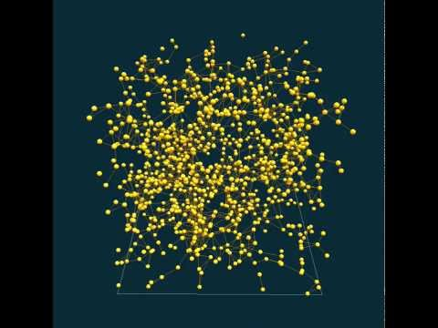

This tutorial introduces the 3D features offered by GAMA.

This tutorial is composed of 3 steps corresponding to 3 models. For each step we present its purpose, an explicit formulation and the corresponding GAML code.